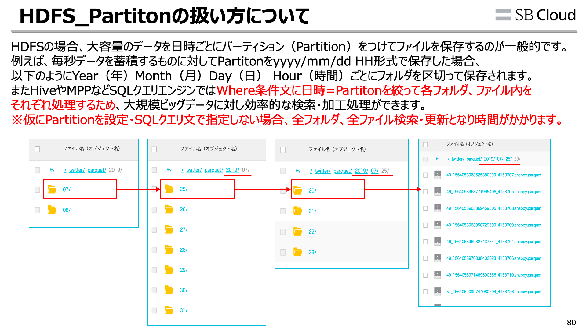

HDFSとは
HDFSについて
別の章にてHDFSについてを軽く説明いたしましたが、本章はこれについてもう少し詳しく説明します。 HadoopはHDFS（Hadoop Distributed Filesystem)と呼ばれる分散ファイルシステムを利用しています。HDFSは非常に大きなファイルを保存、処理、抽出するために設計されたファイルシステムで、多数のコモディティハードウェア（一般販売されてるどのハードウェア）によって構成されるクラスタで動作します。
- 非常に大きなファイルを設計
- 数PB〜EBに及ぶ設計
- HDFS上に構築されたKey-Value-Store
- ストリーミング型のデータアクセス
- 「書き込みは一度、読み出しは何度も行う」といった効率的なデータ処理パターンで設計
- コモディティハードウェア
- 一般人でも購入可能なハードウェアでクラスタを構成
- 一般人でも購入可能なハードウェアでクラスタを構成
HDFSクラスターは、クラスター内のノードごとに1つのNameNode（ネームノード）と複数のDataNode（データノード）で構成されます。NameNodeは、すべてのHDFSメタデータ（属性情報、構成情報、容量、カテゴリライズetc）を記録、管理します。いわゆるHDFSクラスタのリポジトリの位置付けです。NameNodeは、マスターサーバとスレーブサーバの構成で機能し、NameNodeによってファイルシステムを全体管理するため、マスタサーバ/ネームノードを通さずにDataNodeのファイル取得へのアクセスを規制します。応用としてケルベロス認証があります。ケルベロス認証は別の章にて記述します。
NameNodeに入ってくるファイルは1つ以上のblockに分割され、それぞれのDataNodeに保存されます。NameNodeはファイルやディレクトリのオープン、クローズ、名前変更などのファイルシステム操作をします。DataNodeによって送信されたハートビートとブロックレポートからDataNodeへのブロックのマッピングを決定します。DataNodesは、読み取り/書き込み要求を実行し、NameNodeがコマンドを要求した場合にのみ、ブロック作成、ブロック削除、およびブロック複製を実行します。

HDFSはデータ保存をメインとして利用しますが、HBaseやKudu、他のNoSQL、Spark、tensorflowのような他の様々なHadoopエコシステムに利用する場合があります。様々なユースケースに応じてHDFSの種別、圧縮形式、ストレージ形式を考慮する必要があります。これは様々なHadoopエコシステムに依存します。以下、本章ではHDFSのファイル形式、圧縮戦略、スキーマ設計などについて説明します。
HDFSの設計
上記、HDFSのアーキテクチャを説明しました。HDFSはあくまでも大規模なビッグデータに対応するためのファイルシステムの故、以下のメリットとデメリットがあります。
| 得意分野 | 不得意分野 |
|---|---|
| PB〜EBと非常に大きなファイルを処理 | 数KBなど大量の小さなファイルを処理 |
| 大容量のデータを高速でKVS処理することができる | 高スループットを出すためにレイテンシが犠牲になってる |
| 「書き込みは一度、読み出しは何度も行う」というストリーミング型のデータアクセス | 複数ユーザによるHDFS更新処理が不可 |
しかし、このHDFSの不得意分野はHadoopエコシステムのHBase、そしてKuduによって払拭されています。KuduはHDFSをストレージとした、低レイテンシで高スループット、複数ユーザによる処理が可能なBigDataのRDBMSが可能となるストレージの位置付けです。本章はHDFSの基本的なことに集中するため、HBaseやKuduは別の章にて記述いたします。
HDFSのPartitionについて
Hadoopストレージレイヤでデータを管理するため、HDFSはフォルダ構造になっています。大量のファイルをhdfs.file.block.sizeで分割し保存してるため、区別ができるよう、それぞれのフォルダをパーティションとして保存されます。

HDFSのファイル形式について
HDFSは様々なデータ形式を持っています。Parquetにorc、csv、json、AlibabacloudのオリジナルのaliORC、などがあります。
HDFSをcsvやtextファイルとして保存、処理すること可能ですが、HiveやSparkなどのMapReduce、ImpalaなどMPPら分析処理が遅くなります。理由として、csvやtextファイルなど生データの場合、メタ情報が担保できないことや、型変換のオーバヘッドが発生してしまうことから、HDFSのデータ量が多ければ多いほど分析処理クエリの性質上、フィールド名を認識する流れなどにて処理遅延、I/O負荷が発生してしまいます。
また、XMLやJSONをHDFSに変換することは可能ですが、開始タグと終了タグがないため、分割することが難しいのでHadoopそのものでHDFSにすることはできません。代わりの方法として、SparkもしくはHiveでParquet/Avro/Sequenceなどの形式に変換する必要があります。
画像/動画などのバイナルファイルは基本的にfile.block.sizeごとにSequenceなどのコンテナ形式で保存されます。逆に100GBとかあまりにも大きいバイナリファイルであれば、ブロック固定長の関係とディスクの転送レートからしてそのまま保存することが望ましいです。
他、HadoopのHDFSとして様々なファイル形式があります。特徴、列指向、様々なHadoopエコシステム、比較表を作成しましたので、こちらを参照いただければ幸いです。

この比較から、HDFSはParquetが最も有力候補となっています。
HDFS_Parquetについて
上記、比較表でまとめたように、HDFSはParquetが理想という結論が出ました。こちらについて補足します。
Parquetを説明する前に、列指向について説明します。BigDataの場合、レコードが数千万、数億レコードと巨大になります。MySQLやOracleなどは通常、レコード最後の行までフルスキャンして処理するので、レコード数が多いほどI/O負荷、結果クエリを投げても処理が遅くなってしまいます。そのために列指向というデータベースが登場しました。


これらを応用して、Hadoop上で列指向処理ができるMPP（massively parallel processing）が登場しました。１つのクエリを多数の小さなタスクに分散し、HDFSに対して並列でクエリ処理を実現します。例えば、1億レコードのテーブルの合計を集計するためにはそれぞれノード台数分×hdfsのブロックサイズ毎で区切って（例:10万レコードを区切ってそれぞれ1000のタスクに分けて）各タスクはそれぞれが独立して10万レコードの処理を実施、最後に各タスクの結果が集められ、結果が出力されます。例としてGCP BigQuery、Impala、Prestoなどがあります。MPPのより詳しい説明は別の章にて解説します。

この様に、HDFSとしてデータを保存した後、分析処理をするとしたらMPPら列指向に柔軟に合わせる必要があります。それでは列指向としてなぜParquetが選ばれたかを説明します。
Hadoopエコシステムとして開発された列指向フォーマットParquetとORCがあります。ParquetはHDFSから分散検索処理を高速化する技術（Googleの論文Dremel: Interactive Analysis of Web-Scale Datasets）から開発されたフォーマット、ORCはApache Hiveのために開発されたフォーマットと目的や背景の違いがあります。Parquetは高い圧縮率と高速な分析を可能にするファイルフォーマットです。
例えば、以下の図の様なテーブルがあったとします。これが数千億レコード、100TBとあった場合、行指向、レコードを1行1行ずつスキャンして処理するのは骨が折れます。そのため、スキャンできる様にカラムごとにデータ分離して列チャンク（ネスト化）としてデータを保持します。これはデータ構造の情報を保持しつつ、サブセットごとにデータを保持したい思考から設計されたものです。こうして100TB規模の数千億レコードでも、抽出したいカラムだけをスキャンして処理するため、分析の高速処理が可能になります。

他にParquetは現在も進化中なので、最新情報やアーキテクチャはこちらを参照いただければ幸いです。
http://parquet.apache.org/documentation/latest/
HDFSファイルの圧縮について
ビッグデータはデータを持つ分、ストレージら料金が高くなります。そのため、ほとんどはHDFSファイルを圧縮し格納します。そこで注意したいのが、HDFDSファイルの種別、圧縮有無についてです。HDFSファイルの種別は以下の図通りにそれぞれ特徴がありますので、ケースに合わせて対応が望ましいです。圧縮有無については、多くのHDFSファイルを圧縮した場合、解凍のための処理時間、CPU使用率が上がる問題がありますので、バランス調整が大事です。


まとめ
HDFS、種類、特徴、などを説明いたしましたが、こちらはBigDataソリューション（テキストデータを主体とするか、動画データを扱うか）によってHDFSの種別、そして分析基盤ソリューションが異なります。そのため、各自のユースケースに合わせて適材適所な判断をいただければ幸いです。